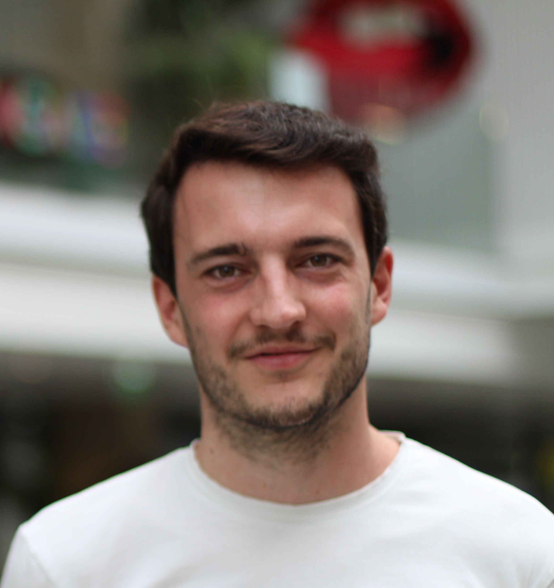

Postdoctoral Researcher · Institut Pasteur, Paris · Biological Analysis Unit
I work on multiple object tracking (MOT) in biological microscopy images — in particular fluorescence imaging of neurons in small model organisms such as Hydra vulgaris. My research combines Bayesian filtering, optical flow, and self-supervised visual learning to build robust, accurate tracking pipelines for dense biological scenes.

* Equal contribution.
Understanding neuronal activity in behaving animals requires accurate tracking of large neuronal populations over time. In small model organisms such as Hydra vulgaris, calcium imaging enables the monitoring of hundreds of neurons simultaneously, but reliable tracking remains a major challenge due to strong body deformations, dense neuronal populations, and the intermittent detectability of neurons. This thesis develops three complementary contributions: (1) SINETRA, a versatile simulator generating annotated 2D/3D fluorescence videos for benchmarking neuron tracking algorithms; (2) KOFT / KOFT-MHT, Kalman-based trackers augmented with optical flow as a second sensor, embedded in a full Bayesian Multiple Hypothesis Tracking framework; (3) VEMC², a tracklet stitching method combining self-supervised visual features with positional cues to reconnect fragmented trajectories. The methods achieve substantial improvements in tracking accuracy, including a first-place ranking on the Cell Tracking Challenge Cell Linking Benchmark.
Python library for biological object tracking. Implements classic and state-of-the-art detection, segmentation and tracking methods.
🏆 1st — CTC Cell Linking BenchmarkPyTorch implementation of Kalman filters with batch processing, CPU/GPU parallelisation, and support for smoothing.
Fast and Pythonic linear assignment problem solver.
Fast Thin Plate Spline implementation based on NumPy or PyTorch. Scikit-Learn-like API with CPU/GPU support.
Offline management of reproducible research experiments from YAML configuration files, with isolated source and dependencies.